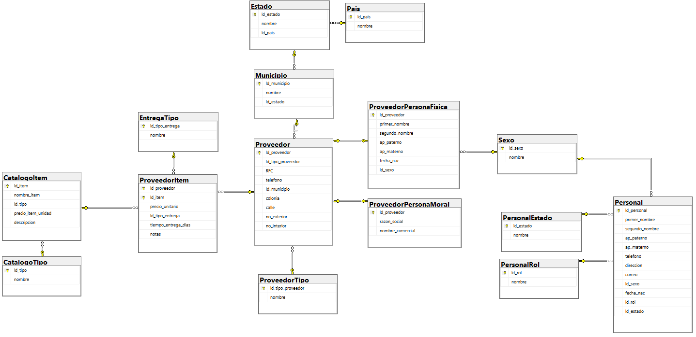

Diagrama de la Base de Datos

Arquitectura de la Base de Datos
Tabla CatalogoItem
Propósito
Almacenar el registro de cada servicio o refacción individual que ofrece el taller, vinculando cada ítem a un tipo estandarizado para asegurar la consistencia.
Campos
Id_item: Clave primaria (PK) y SKU único del producto (ej. SRV-MANT-0001).
nombre_item: Nombre comercial del servicio o refacción.
Id_tipo: Clave foránea (FK) que se conecta con la tabla `CatalogoTipo`.
precio_item_unidad: Precio de venta al público (MXN).
descripcion: Detalles adicionales del servicio o refacción.
Tabla CatalogoTipo
Propósito
Actuar como una tabla de catálogo (lookup table) para estandarizar y centralizar los tipos de ítems disponibles (ej. "Servicio", "Refacción"), evitando la redundancia y errores de captura.
Campos
Id_tipo: Clave primaria (PK) autoincremental para el tipo de ítem.
nombre: Descripción única del tipo de ítem.
Normalización de la Base de Datos
1NF
Cada ítem es una fila única con atributos atómicos, sin campos multivaluados.
2NF
Todos los atributos dependen de la clave primaria `Id_item`; no existe PK compuesta.
3NF
Al separar los tipos de ítem en `CatalogoTipo`, se elimina la redundancia de datos y se previenen anomalías de actualización, cumpliendo con 3NF.
Código SQL para Crear Tablas
SQL
Creación de tablas CatalogoTipo y CatalogoItem
-- Tabla para estandarizar los tipos de ítem
CREATE TABLE dbo.CatalogoTipo (
Id_tipo TINYINT IDENTITY(1,1) PRIMARY KEY,
nombre NVARCHAR(50) NOT NULL UNIQUE
);
GO
-- Tabla principal de ítems del catálogo
CREATE TABLE dbo.CatalogoItem (
Id_item VARCHAR(20) PRIMARY KEY,
nombre_item NVARCHAR(120) NOT NULL,
Id_tipo TINYINT NOT NULL,
precio_item_unidad DECIMAL(12,2) NOT NULL,
descripcion NVARCHAR(500) NULL,
CONSTRAINT FK_CatalogoItem_Tipo FOREIGN KEY (Id_tipo) REFERENCES dbo.CatalogoTipo(Id_tipo),
CONSTRAINT CHK_CatalogoItem_precio CHECK (precio_item_unidad >= 0)
);
GODatos de Ejemplo
SQL
Inserción de registros de ejemplo
-- Primero, poblar la tabla de tipos
INSERT INTO dbo.CatalogoTipo (nombre) VALUES
('Servicio'),
('Refacción');
GO
-- Luego, insertar los ítems referenciando los IDs de los tipos
INSERT INTO dbo.CatalogoItem (Id_item, nombre_item, Id_tipo, precio_item_unidad, descripcion) VALUES
('SRV-MANT-0001','Mantenimiento preventivo', 1, 450.00, 'Limpieza, pasta térmica, pruebas básicas'),
('SRV-SOFT-0001','Formateo e instalación de SO', 1, 600.00, 'Instalación de Windows 11 + drivers'),
('REF-SSD-0001','SSD 1TB NVMe', 2, 1850.00, 'PCIe 4.0, lectura hasta 7,000 MB/s'),
('REF-RAM-0001','RAM 16GB DDR5', 2, 920.00, 'SO-DIMM 5600 MT/s');
GO